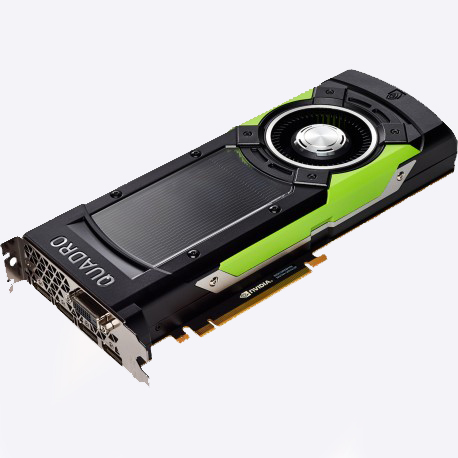
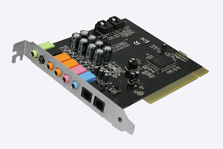
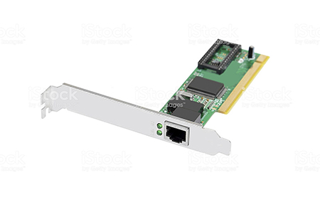
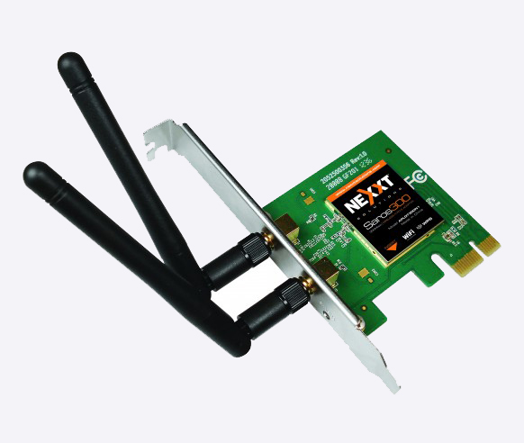
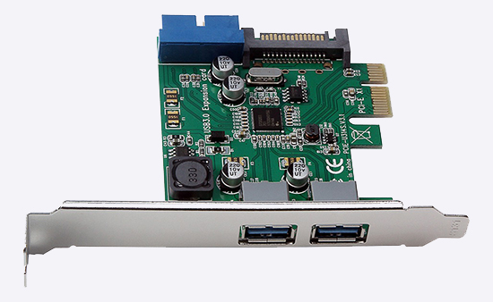

⠀
La tarjeta madre: Conodida tambien como Placa base es la tarjeta mas importante, la cual nos permite la conexion de todos los dispositivos de nuestra computadora.⠀
La tarjeta grafica: Tambien conocida como tarjeta de video, es el componete encargado de mostrar imagenes de los medios de visualizacion que tengamos conectados. Son unos dispositivos independientes conectada a la placa base.⠀
 Tarjeta de sonido: es un dispositivo de hardware que permite la entrada o salida de información en forma de sonido. Es usa para realizar multimedia como videos, sonidos, juegos, animaciones etc.⠀
 Tarjeta Red LAN: Es una tarjeta para expansión de capacidades que tiene la función de enviar y datos por medio de cables en las redes de área local, esto es entre redes de computadoras.⠀
 Tarjeta de red inalambrica: También llamadas tarjetas Wi-Fi, son tarjetas para expansión de capacidades que sirven para enviar y recibir datos sin la necesidad de cables en las redes inalámbricas de área local.⠀
 Tarjeta de expansion: Son una serie de circuitos, chips y puertos integrados en una placa plástica, la cual cuenta con un conector lineal diseñado para ser insertado dentro de una ranura o slot especial de la tarjeta principal. 